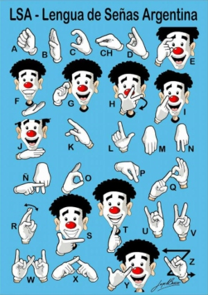
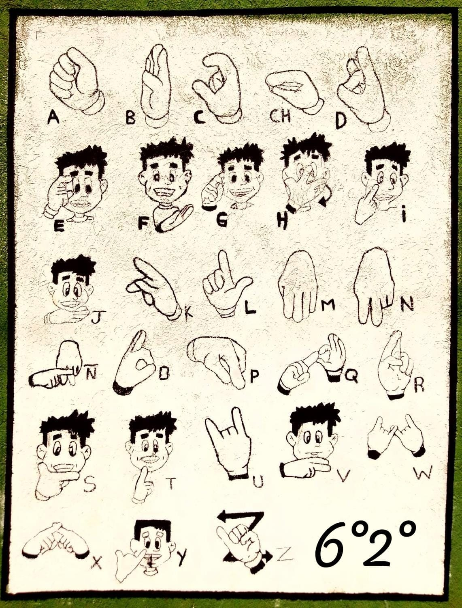
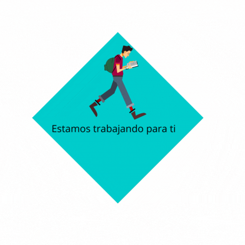

¡Bienvenidos a nuestra revista interactiva! En esta revista digital Prepárate para explorar temas diversos y apasionantes
Nuestra revista interactiva está diseñada para que puedas sumergirte y divertirte en las diversas propuestas, una de ellas es la página de humor interactivo. También podrás sumergirte en historias cautivadoras contadas en formatos innovadores, que incluyen videos, animaciones y galerías de imágenes.
Cada página se convierte en una puerta hacia un nuevo mundo de conocimiento, entretenimiento y reflexión. Con solo deslizar tus dedos podrás acceder a contenidos enriquecedores y explorar artículos multimedia, entrevistas exclusivas, reportajes visuales y mucho más.
Como verás la interactividad es la clave de nuestra propuesta, ya que podrás participar activamente en la experiencia a través de encuestas, cuestionarios y comentarios en tiempo real. Además, queremos que formen parte de esta revista digital. A través de funciones de participación, podrás compartir tus opiniones, dejar comentarios, votar en encuestas y hasta contribuir con tu propio contenido. Queremos que te sientas parte activa de esta comunidad, donde tus ideas y perspectivas son valoradas.
-
Una Plataforma que Ilumina el Camino de los estudiantes
.png)
En una era impulsada por la tecnología, la educación es la clave para el éxito, y Potrero Digital se ha convertido en un faro de conocimiento para nosotros, estudiantes del Colegio Máximo. Esta plataforma en línea nos ha brindado la oportunidad de adentrarnos en el vasto mundo de la programación web y muchas otras habilidades de manera gratuita, y por eso, no podemos dejar de expresar nuestro agradecimiento.
Potrero Digital no solo ofrece cursos de alta calidad, sino que también tiene un fuerte compromiso con la comunidad. Sus coordinadoras, Rocío, Aylin y Zahira, han estado en nuestro colegio, la UTEC, brindando apoyo invaluable con nuestras tareas y proyectos. Han demostrado una dedicación excepcional y han fomentado un ambiente enriquecedor para el aprendizaje.
Además, queremos agradecer a la profesora Sandra Berardi, quien ha sido un referente para nosotros en el colegio 34. Su apoyo constante y su disposición para resolver dudas o proporcionar noticias relevantes relacionadas con Potrero Digital han sido invaluables.
En este mundo digital en constante evolución, Potrero Digital se destaca como un faro que nos guía hacia el conocimiento y el éxito en el campo de la programación y la tecnología. Estamos agradecidos por la oportunidad de aprender y crecer gracias a esta plataforma y a las personas que la respaldan. Su dedicación y generosidad han marcado una diferencia significativa en nuestra educación y en nuestro futuro.
En la seccion de Contáctanos dejare la pagina de potrero digital vayan a chequearlo ;D
-
DERECHOS DESCONOCIDOS
Una aproximación al tema de los derechos humanos (DH) y derechos naturales (DN) desde la problemática abordada por “Figuras ocultas”. Se intenta proponer una mejor comprensión del rol de los individuos y de la sociedad en dichos DH a través de este film dirigido por Theodore Melfi y que recrea la situación de tres mujeres de color negro que entran a mediados de los años 60s al programa espacial de la NASA. En su ambiente laboral, social y familiar estas mujeres luchan de manera pacífica por reivindicar sus derechos como mujeres y como grupo racial marginado. En “Talentos Ocultos” se puede ver como se han desconocido derechos propios al ser humano. Por eso el film ayuda a reconocer que el ser humano desde sus orígenes ha convivido con unos derechos que son llamados naturales; que lo han acompañado desde su génesis. No solo se ve una violación de los derechos humanos sino ante todo de las leyes naturales.
LOS DERECHOS NATURALES Y LOS DERECHOS HUMANOS REIVINDICADOS PACÍFICAMENTE.
“Talentos Ocultos” resulta una poderosa reflexión sobre la importancia, tanto de buscar que más mujeres jóvenes en el mundo se atrevan a estudiar carreras relacionadas con las ciencias duras, como del trato que se les da a las mujeres en el ámbito laboral. Que las mujeres tengan el mismo derecho que los trabajadores masculinos y que los hombres también tienen derechos a trabajos que solo son asignados a mujeres. El derecho lo brindamos cada uno de nosotros, por el respeto que le brindamos a cada persona y la educación que nos brindan en nuestros hogares.
TEMAS TOMADAS EN EL TEXTO: RACISMO, MISOGINIA, DERECHO AL TRABAJO, DERECHO A LA EDUCACIÓN, SOLIDARIDAD, JUSTICIA, RESPETO.
-
29 DE AGOSTO
DÍA NACIONAL DE LSA

Lengua de Señas Argentina
Lengua de Señas Argentina
La Lengua de Señas Argentina (LSA) es la lengua de señas empleada en Argentina por la comunidad sorda. Constituye un verdadero idioma y un canal de transmisión diferente a las lenguas habladas, en tanto implica aproximarse a formas de pensamiento visuales, no verbales. La Lengua de Señas Argentina es la que se transmite en la modalidad visoespacial, posee una
estructura gramatical completa, compleja y distinta del castellano. Al ser visual, es accesible para las personas sordas. A través de la Lengua de Señas Argentina la persona puede comunicarse, transmitir sus deseos e intereses, informarse, defender sus derechos y construir una identidad lingüística y cultural positiva que les permita participar y trascender plenamente en todos los aspectos de la vida social.
¿Qué es el derecho a la educación inclusiva?
Es el derecho de las personas con discapacidad a educarse en las mismas escuelas que el resto de las personas. Para asegurar ese derecho, los Estados tienen la obligación de dar apoyo para que las personas con discapacidad puedan educarse en igualdad con los demás. Los Estados también
garantizar que las personas con discapacidad accedan a la educación superior y al aprendizaje durante toda la vida. El Poder Ejecutivo podrá fomentar e impulsar el acceso y el uso de la Lengua de Señas Argentina de todas las personas que, por cualquier motivo, elijan comunicarse en dicha lengua, con el objetivo de:
- Acceder de manera efetica y plena a la vida social;
- Eliminar barreras comunicacionales y actitudinales facilitando el acceso a la comunicación e información
- Impulsar y fortalecer su independencia, y autonomía personal y toma decisiones;
- Diseñar u ejecutar estrategias que aseguren la accesibilidad comunicacional en todas
- Las políticas públicas dirigidas a la sociedad
LA LEY
LA LEY El 29 de Agosto del año 1987, ASAM, convocó a diversas entidades de personas sordas, tales como la Asociación Argentina de Sordos Orales (ASO), la Unión Argentina de Sordomudos (UAS) y la Asociación Argentina de Sordomudas “Casa Hogar”. Entre las personalidades destacadas, ligadas al ámbito educativo, entre quienes mencionamos al Profesor Alberto Elazar (sordo), a las Profesoras de
Sordos, Liliana Cuccione e Iris Biafore, la Intérprete Virginia Domínguez, y la Lic. Rosana Machado, incluyendo a la CAS con el fin de debatir sobre nuestra lengua y designarla OFICIALMENTE como LENGUA DE SEÑAS ARGENTINA -LSA-. Después de estos argumentos se sometió a deliberación y por mayoría en la votación, se estableció el 29 de Agosto el día nacional de la LSA.
-
-
Aquí dejaremos alguno de los textos de las s que participaron en las Olimpiadas Literarias
Contenedor 200x200
Contenedor 200x200
Contenedor 200x200
-
El encantador gato negro que encontró refugio en una secundaria
En una tranquila escuela secundaria, una presencia inesperada capturó la atención y los corazones de todos los que la conocieron. Un misterioso gato negro de ojos verdes logró infiltrarse en la institución, dejando testigos asombrados y encantados. Entre ellos se encontraba Beti, la cariñosa portera, quien se convirtió en su fiel protectora. Si bien fue necesario sacar el gato todas las noches para evitar las alarmas de movimiento, esto no impidió que él regresara día tras día y además que alumnos y profesores se sintieran atraídos por su encanto y cariño, dejando una huella imborrable en sus corazones.
Un visitante inesperadoEn una soleada mañana, los alumnos se sorprendieron al ver al gato negro de ojos verdes merodeando cerca de la entrada de la escuela . Parecía curioso y confiado, como si supiera que había encontrado un lugar seguro. Pronto, los rumores sobre el felino se esparcieron, y Beti, la portera amante de los animales, fue la primera en acercarse a él.
Un lazo especialDesde el primer encuentro, Beti sintió una conexión especial con el gato. Decidió cuidarlo y darle de comer, ya que parecía no tener un hogar. Con el tiempo, el felino se volvió cada vez más cercano a la alegre Beti, la portera, y a los demás que se cruzaban con él en el recinto escolar. Su presencia se convirtió en un bálsamo para el estrés diario de la escuela, y tanto alumnos como profesores disfrutaban de su compañía durante los descansos.
El dilema nocturnoA pesar del afecto que todos sentían por el cariñoso gato, surgía un dilema cuando llegaba la noche. Las alarmas de movimiento se activaban si el felino se quedaba dentro de la escuela, lo que significaba que Beti debía asegurarse de sacarlo antes de que esto sucediera. Aunque esta situación suponía un desafío, no disminuía el cariño que todos tenían hacia él.
Un cariño compartidoCon el tiempo, el gato se convirtió en parte de la vida diaria de la secundaria. Los alumnos lo mimaban con caricias y juegos, mientras que los profesores lo observaban con cariño mientras impartían sus clases. Beti continuó siendo su protectora, brindándole alimento y afecto a diario.
Una despedida agridulceA pesar del amor que todos sentían por el gato, se sabía que necesitaba un hogar permanente y seguro. La dirección de la escuela se puso en contacto con organizaciones de rescate y adopción para encontrarle un lugar adecuado al felino. . Aunque la despedida fue agridulce, sabían que era lo mejor para él.
Un recuerdo imborrableLa partida del gato dejó un vacío en la escuela secundaria N°34, pero también dejó un recuerdo imborrable en los corazones de todos. Su encanto y cariño demostraron la importancia de cuidar y proteger a los animales que necesitan un hogar. A través de esta experiencia, alumnos y profesores aprendieron el valor del amor incondicional hacia los seres vivos.
¿Mito o verdad?El misterioso gato negro que se infiltró en la secundaria N°34 dejó una huella imborrable en esta comunidad escolar. Su presencia trajo consuelo y alegría a todos los que lo conocieron, y su partida dejó un gran vacío, mezcla de tristeza y nostalgia. El cariñoso gato negro de ojos verdes será recordado con cariño y alegría. A través de su historia, aprendimos la importancia de brindar amor y protección a los animales que necesitan un hogar. El encantador gato negro de ojos verdes encontró refugio en una secundaria, pero también encontró su lugar en los corazones de todos los que tuvieron el privilegio de conocerlo. ahora se encuentra feliz en un hogar.
Se dice que en reiteradas ocasiones, más precisamente por las noches, la alarma de la escuela se activa de repente y que al llegar al lugar no se puede encontrar la razón de la activación.Los técnicos en seguridad afirman que el sistema y las alarmas funcionan muy bien. ¿Será el juguetón gato negro de ojos verdes que de vez en cuando les juega una broma para hacerles recordar que él también extraña a todos aquellos que supieron cobijarlo y brindarle cariño incondicionalmente?...
-
educación sexual integral
El sexo puede ser algo grandioso para muchas personas, pero también tiene consecuencias. Tener sexo puede llevar a un embarazo o a contraer/contagiar una ETS, así que es importante saber cómo protegerte.
¿Cómo el sexo puede llevar a una ETS o embarazo?Cualquier persona que tiene sexo puede estar en riesgo de embarazo y/o de una enfermedad de transmisión sexual.
Las enfermedades de transmisión sexual pueden contagiarse durante toda clase de actividad sexual: sexo oral, anal, vaginal y frotando los genitales (frotar en seco piel contra piel, sin ropa). Algunas infecciones se contagian vía fluidos corporales -como el semen, fluidos vaginales o sangre. Otros pueden esparcirse cuando la piel de la boca o de los genitales toca la piel de los genitales de otra persona.
En realidad, todo contacto de tipo sexual con otra persona -donde hay fluidos corporales o contacto con la piel genital- te expone al riesgo de una ETS.
Las infecciones de transmisión sexual son bastante comunes -mucha gente tiene una en algún momento de su vida. Algunas ETS pueden ser graves, pero la buena noticia es que se las puede tratar o curar. Si estás teniendo sexo, protégete usando condones y haciéndote un examen de detección de ETS.
Junto con las ETS, existe el riesgo de embarazo si tienes sexo vaginal. Un embarazo puede suceder en cualquier momento en que el semen (o líquido seminal) del pene se introduce en la vagina. También puede suceder si el semen llega a la vulva o cerca de la vagina (por ejemplo si tienes semen en tus dedos y tocas la vagina).
Asi que si estás teniendo sexo vaginal -o piensas que lo harás pronto- usa algún método anticonceptivo (como condones, un DIU o pastillas) si quieres prevenir un embarazo. Los anticonceptivos son la mejor manera de evitar un embarazo si tienes sexo.
¿Cuál es la mejor manera de protegerse de un embarazo y las ETS?La única manera 100% eficaz de evitar un embarazo es no tener sexo vaginal () u otra actividad sexual donde el esperma pueda tocar la vulva o vagina (esto se llama abstinencia). La única manera 100% infalible de evitar una ETS es no mantener ninguna actividad sexual donde haya contacto de fluidos corporales o fricción cuerpo contra cuerpo con otra persona (incluyendo sexo oral, anal y vaginal).
Seamos realistas: la mayoría de las personas tienen sexo en algún momento de su vida. Es por eso que existen maneras de protegerse de un embarazo y/o ETS si decides tener sexo. Una manera de protegerte de las ETS es usar barreras de protección para tener sexo seguro (como condones o barreras bucales) cada vez que tengas sexo oral, anal o vaginal. Para prevenir un embarazo utiliza un método anticonceptivo (incluyendo condones) cada vez que tengas sexo vaginal.
Los condones son el único tipo de anticonceptivo que previene un embarazo y las ETS al mismo tiempo. Pero si tienes sexo , la mejor protección es usar un condón + otra clase de anticonceptivo -como la pastilla, DIU, implante o inyección. De esta manera estás protegido de las ETS y doblemente protegido de un embarazo.
Otras de las maneras de mantenerse saludable es hacerse un examen de detección de ETS regularmente y hablar honestamente sobre estos temas con aquellas personas con las que te involucras sexualmente.
Aquí tienen más detalles sobre del uso de los presevativos -> Detalles también pueden buscar preservativos es su salita más cercana y le pueden dar tranquilamente, solo se acerca a la barra de atención y lo piden :D
Humor
-
